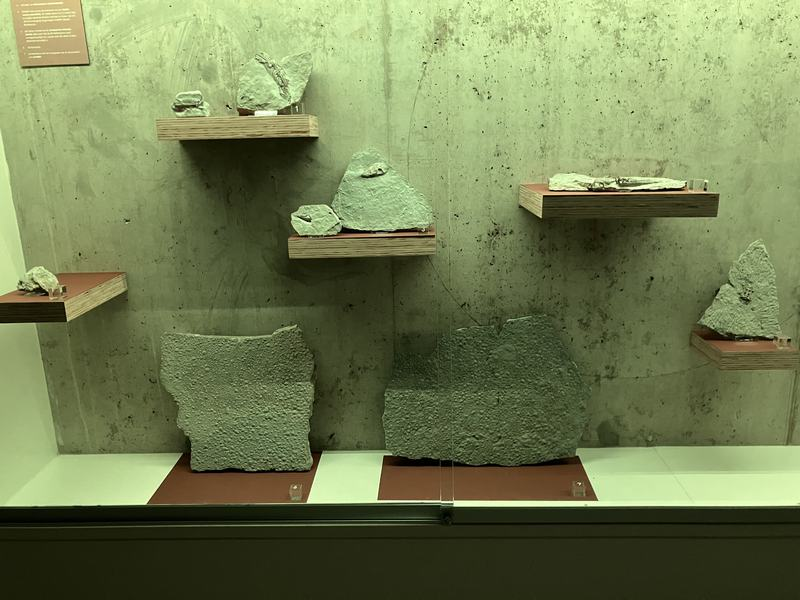
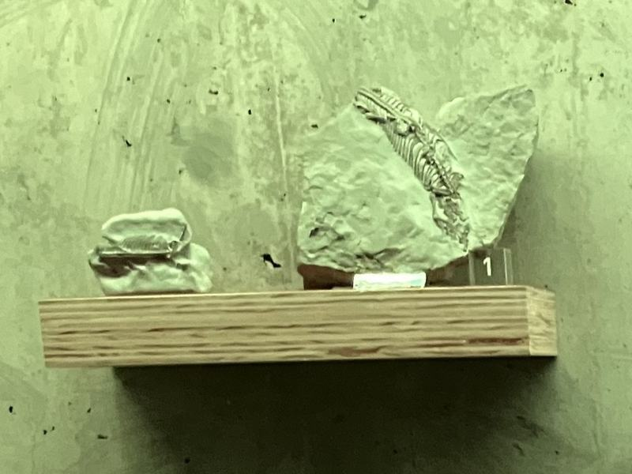
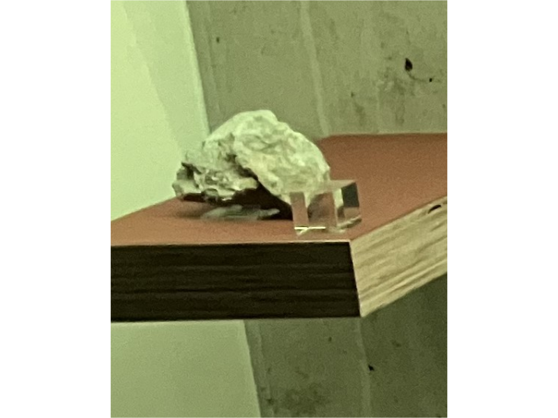
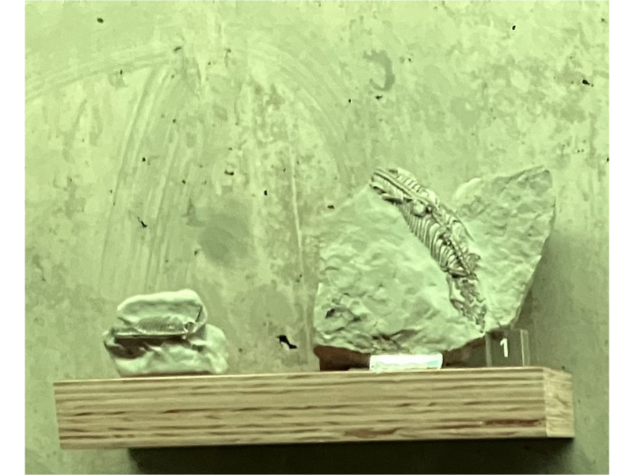
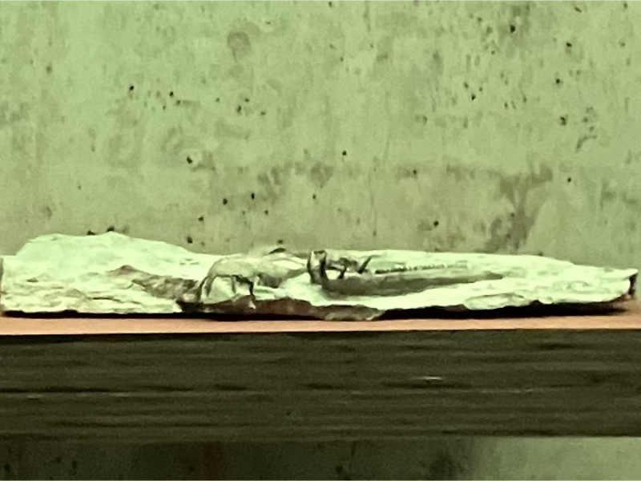
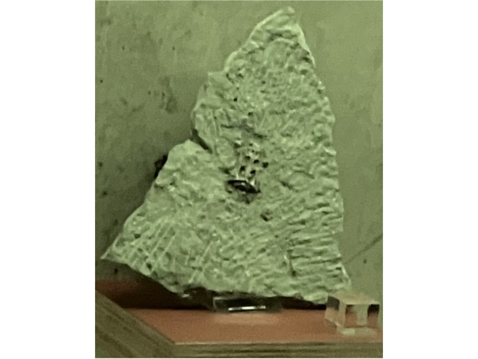
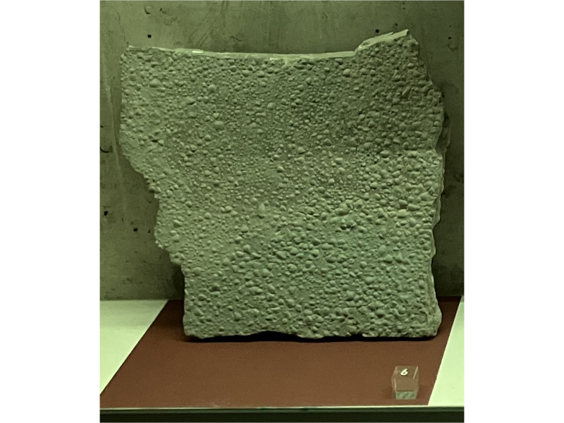
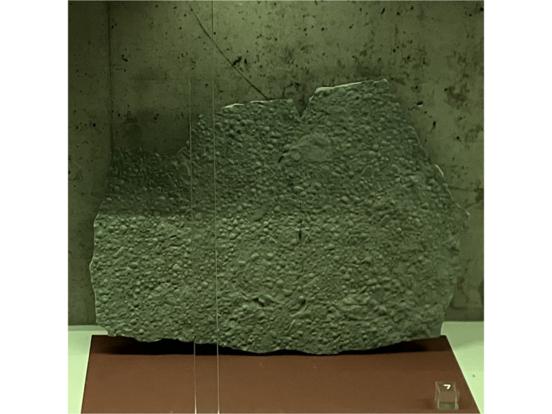

3. Leven in zee








Terug naar de plattegrond
In deze vitrine liggen fossielen uit de steengroeve bij Winterswijk. Zo’n 245 miljoen jaar geleden was Oost-Nederland een strand aan een grote binnenzee. Deze fossielen zaten oorspronkelijk vast in harde kalksteen. In het lab worden zulke fossielen heel voorzichtig uit de steen gehaald. Preparateurs gebruiken fijn gereedschap; hamertjes, naalden en speciaal pneumatisch gereedschap om laagje voor laagje steen verwijderen zonder het fossiel te beschadigen. Dat is precies werk: één verkeerde beweging kan een bot of pootafdruk breken. Langzaam verschijnen dan de vormen van wervels, ribben en andere botten in het gesteente. Bijzonder is dat de fossielen schedels van de Nothosurus zo goed bewaard zijn, dat onderzoekers met CT-scans zelfs de hersenen konden reconstrueren. Daaruit blijkt dat de het dier een sterk reukvermogen had. Ook opvallend is dat de Nothosaurus een zogenaamd derde oog had, dat is een lichtgevoelig orgaan midden op de schedel. We weten niet zeker waarvoor dit orgaan diende, maar waarschijnlijk kon de Nothosaurus zich hiermee oriënteren in het water. Wat boven of onder is. Sommige hagedisachtigen hebben tegenwoordig als ze jong zijn ook nog een derde oog; deze verdwijnt als deze hagedissen volwassen worden.
De genummerde blokjes verwijzen naar:
1. Skeletresten van een kleine saurier:
Deze saurier werd circa 20 tot 30cm lang.
2. In 2010 werd deze kleine schedel gevonden.
Hij is van een nieuwe soort die nog niet eerder ontdekt is: de Palatodonta bleekeri.
3. Schedels van Anarosaurus heterondontus.
4. Schedel met er naast de onderkaak van een Nothosaurus marchicus.
Dit reptiel werd circa 1,5 meter lang en jaagde vooral op kleinere reptielen en vissen. Aan het plafond in de gang hangen twee modellen van een Nothosaurus.
5. Een kleine schedel van de Lariosaurus vosseveldensis.
De soort lijkt op de Nothosaurus, maar vertegenwoordigt een nieuwe soort die alleen in Oost-Nederland gevonden is.